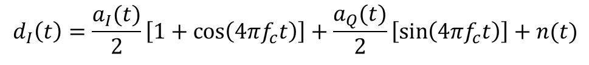

Demodulation¶
Module containing all the functions used in the demodulation process of a 16 QAM communication system.
Phase Locked Loop¶
-
demodulation.PLL(input_signal, Fs, lenght, N) Synchronizes the input carryer signal with the local oscillator to avoid crosstalk due to phase and frequency differences between TX and RX.
- Parameters
input_signal (1D array of floats) – Complex signal received at the input of the demodulator.
Fs (float) – Sampling frequency.
lenght (int) – Lenght of the output vector.
N (int) – Samples per period of the sinusuidal wave.
- Returns
cos_out (1D array of floats) – Cosine wave synchronized with the input signal.
sin_out (1D array of floats) – Sine wave synchronized with the input signal.
import numpy as np
import math
from math import pi
def PLL(input_signal, Fs, lenght, N):
zeta = .707 # damping factor
k = 1
Bn = 0.01*Fs #Noise Bandwidth
K_0 = 1 # NCO gain
K_d = 1/2 # Phase Detector gain
K_p = (1/(K_d*K_0))*((4*zeta)/(zeta+(1/(4*zeta)))) * \
(Bn/Fs) # Proporcional gain
K_i = (1/(K_d*K_0))*(4/(zeta+(1/(4*zeta)**2))) * \
(Bn/Fs)**2 # Integrator gain
integrator_out = 0
phase_estimate = np.zeros(lenght)
e_D = [] # phase-error output
e_F = [] # loop filter output
sin_out_n = np.zeros(lenght)
cos_out_n = np.ones(lenght)
for n in range(lenght-1):
# phase detector
try:
e_D.append(
math.atan(input_signal[n] * (cos_out_n[n] + sin_out_n[n])))
except IndexError:
e_D.append(0)
# loop filter
integrator_out += K_i * e_D[n]
e_F.append(K_p * e_D[n] + integrator_out)
# NCO
try:
phase_estimate[n+1] = phase_estimate[n] + K_0 * e_F[n]
except IndexError:
phase_estimate[n+1] = K_0 * e_F[n]
sin_out_n[n+1] = -np.sin(2*np.pi*(k/N)*(n+1) + phase_estimate[n])
cos_out_n[n+1] = np.cos(2*np.pi*(k/N)*(n+1) + phase_estimate[n])
sin_out_n = -sin_out_n
cos_out = cos_out_n[280:400]
sin_out = sin_out_n[280:400]
for i in range(18):
cos_out = np.concatenate(
(cos_out, cos_out_n[280:400], cos_out_n[280:400]), axis=None)
sin_out = np.concatenate(
(sin_out, sin_out_n[280:400], sin_out_n[280:400]), axis=None)
return(cos_out, sin_out)

Image source: https://wirelesspi.com/phase-locked-loop-pll-in-a-software-defined-radio-sdr/
Mixer¶
After the synchronization, the output of the PLL will mix the IF signal. Let’s say s(t) is the IF signal, and will be mixed by a cosine wave already synchronized.
{kind=link}
s(t) is composed by the symbols in-phase (a_i) mixed with a cosine and the symbols in quadrature (a_q) mixed with a sine. Expanding s(t):
{kind=link}
The mixing process will result in a baseband signal with high frequency components:
{kind=link}
{kind=link}

Low Pass Filter¶
Since the only thing that’s important at this point is the baseband signal, a LPF will filter the high frequency components.
-
demodulation.LPF(signal, fc, Fs) Low pass filter, Butterworth approximation.
- Parameters
signal (1D array of floats) – Signal to be filtered.
fc (float) – Cutt-off frequency.
Fs (float) – Sampling frequency.
- Returns
signal_filt (1D array of floats) – Filtered signal.
W (1D array of floats) – The frequencies at which ‘h’ was computed, in Hz.
h (complex) – The frequency response.
import numpy as np
import scipy.signal as sig
from math import pi
def LPF(signal, fc, Fs):
o = 5 # order of the filter
fc = np.array([fc])
wn = 2*fc/Fs
[b, a] = sig.butter(o, wn, btype='lowpass')
[W, h] = sig.freqz(b, a, worN=1024)
W = Fs*W/(2*pi)
signal_filt = sig.lfilter(b, a, signal)
return(signal_filt, W, h)
{kind=link}
Matched Filter¶
-
demodulation.matched_filter(signal, template) Convolutes the baseband signal with the template of the impulse response used in the modulator (Square Root Raised Cossine) to increase the SNR.
- Parameters
signal (1D array of floats) – Baseband signal to be filtered.
template (1D array of floats) – Impulse response of the filter used at the signal shaping block
- Returns
signal_filt – Filtered signal.
- Return type
1D array of floats
import numpy as np
def matched_filter(signal, template):
signal_filt = np.convolve(signal, template, 'full')
return(signal_filt)

Downsampler¶
-
demodulation.downsampler(signal, packet_s, upsampler_f) The algorithm analizes the synchronization symbols and tries to find the sample where the value of the symbol is maximum. After that, is possible to estimate in which sample the information begins to appear on the signal (i.e. detects the delay)
- Parameters
signal (1D array of floats) – Baseband signal.
packet_s (int) – Number of bits in the transmitted packet.
upsampler_f (int) – Upsampler factor used at the modulator.
- Returns
symbols – The sampled symbols.
- Return type
1D array of floats
def downsampler(signal, packet_s, upsampler_f):
e = 0
gardner_e = []
peak_sample = 0
peak_sample_acc = []
low_point = 0
threshold = 4
for i in range(len(signal)):
if signal[low_point] < -threshold:
if signal[i] > threshold:
e = (abs(signal[(i+1)]) -
abs(signal[i-1])) * abs(signal[i])
gardner_e.append(e)
if e > 0.8:
peak_sample = peak_sample + 1
peak_sample_acc.append(peak_sample)
elif e < -0.8:
peak_sample = peak_sample - 1
peak_sample_acc.append(peak_sample)
else:
break
else:
peak_sample = peak_sample + 1
peak_sample_acc.append(peak_sample)
else:
low_point = low_point + 1
peak_sample = peak_sample + 1
peak_sample_acc.append(peak_sample)
# 450 is the number of samples before the convergence symbol of the algorithm.
cut_i = peak_sample - 450
cut_f = cut_i + int((packet_s/4)*upsampler_f)
print("Cut_i = ", cut_i)
print("Cut_f = ", cut_f)
# For the code to still work, even when there is a big BER, this secction is required.
if cut_i > 730:
signal = signal[261:2306+510]
elif cut_i < 690:
signal = signal[261:2306+510]
else:
signal = signal[cut_i:cut_f]
symbols = signal[slice(0, len(signal), upsampler_f)]
return(symbols)
{kind=link}
{kind=link}
Demapper¶
-
demodulation.demapper(symbols_I, symbols_Q, packetSize, threshold=3.0) - Generates an array of bits using the values based on the 16QAM indexing vector.
If the symbol amplitude is between 0 and the threshold, it correponds to the bits 10, if it’s greater than the threshold, it corresponds to the sequence 11.
If the symbol amplitude is between 0 and -threshold, it correponds to the bits 01, if it’s lower than -threshold, it corresponds to the sequence 00.
After the recovery of the bits, both vectors (I and Q) are merged, genereting the output bit stream.
- Parameters
symbols_I (1D array of floats) – Downsampled in-phase symbols.
symbols_Q (1D array of floats) – Downsampled quadrature symbols.
packetSize (int) – Number of bits in the transmitted packet.
threshold (float, optional) – The limit between two symbols in the 16QAM constellation. The default value is 3.
- Returns
bitstream – Bits transmitted.
- Return type
1D array of ints
import numpy as np
def demapper(symbols_I, symbols_Q, packetSize, threshold = 3.0):
Ns = int(packetSize/4)
bits_I = []
bits_Q = []
for i in range(Ns):
if symbols_I[i] >= 0 and symbols_I[i] <= threshold:
bits_I.append(1)
bits_I.append(0)
if symbols_I[i] > threshold:
bits_I.append(1)
bits_I.append(1)
if symbols_I[i] < 0 and symbols_I[i] >= -threshold:
bits_I.append(0)
bits_I.append(1)
if symbols_I[i] < -threshold:
bits_I.append(0)
bits_I.append(0)
if symbols_Q[i] >= 0 and symbols_Q[i] <= threshold:
bits_Q.append(1)
bits_Q.append(0)
if symbols_Q[i] > threshold:
bits_Q.append(1)
bits_Q.append(1)
if symbols_Q[i] < 0 and symbols_Q[i] >= -threshold:
bits_Q.append(0)
bits_Q.append(1)
if symbols_Q[i] < -threshold:
bits_Q.append(0)
bits_Q.append(0)
bits_I = list(map(int, bits_I))
bits_Q = list(map(int, bits_Q))
bitStream = np.zeros(packetSize)
for i in range(len(bits_I)):
bitStream[2*i] = bits_I[i]
bitStream[2*i-1] = bits_Q[i-1]
return(bitStream)
{kind=link}